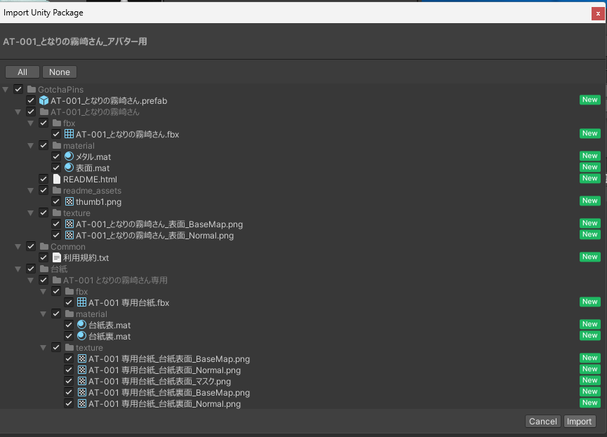
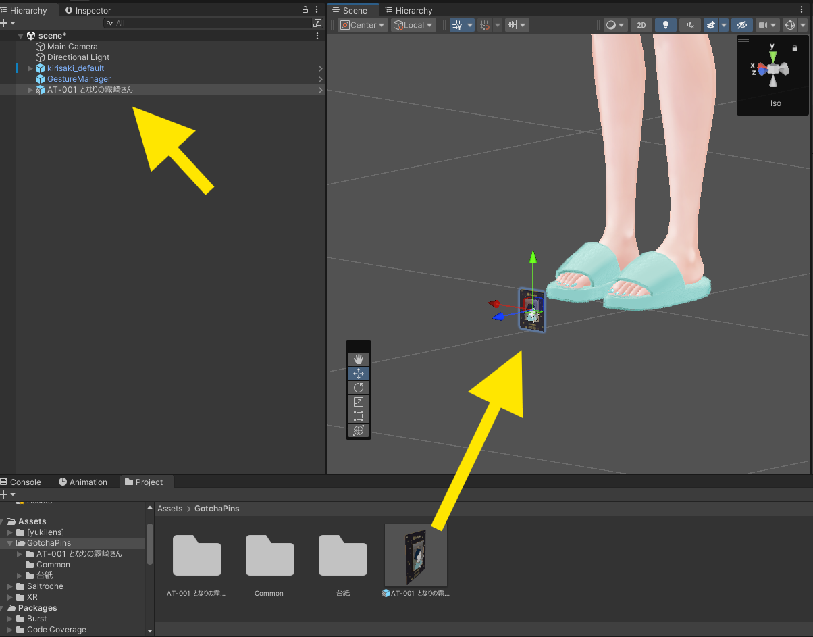
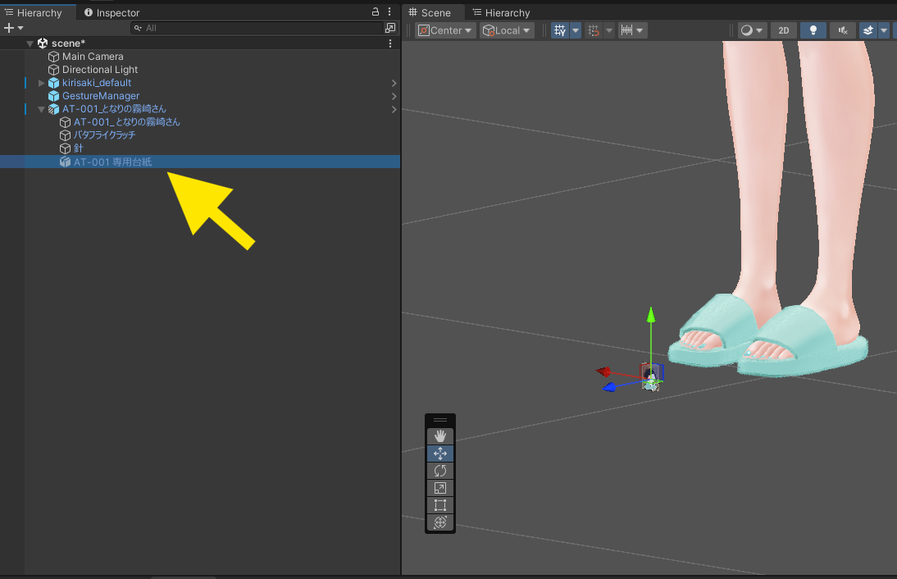
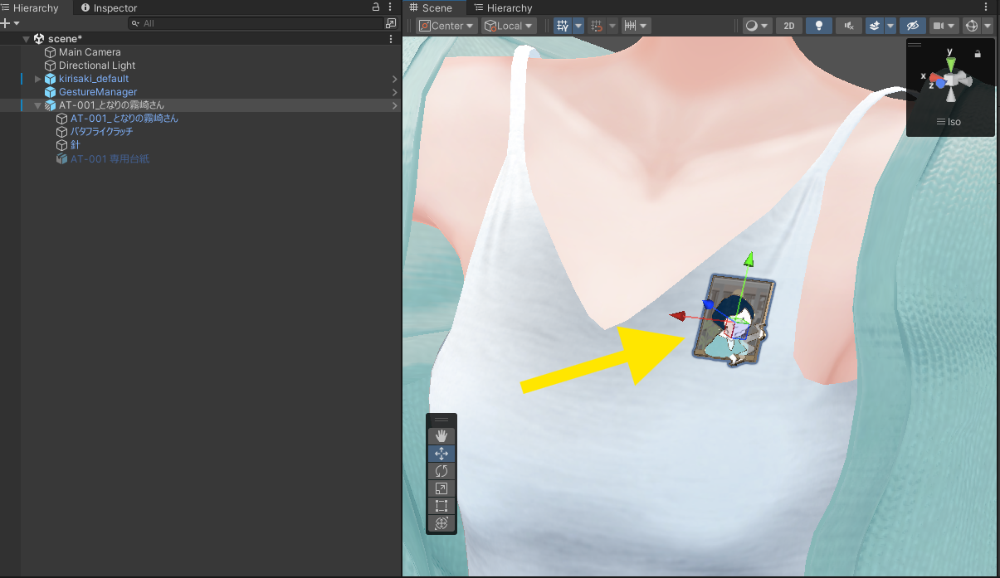
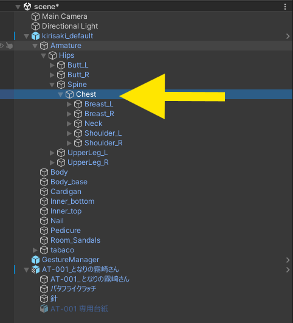
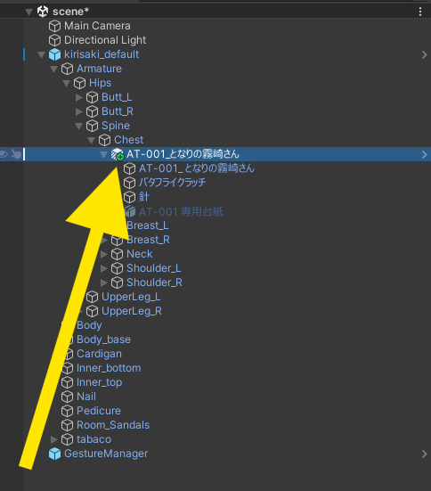
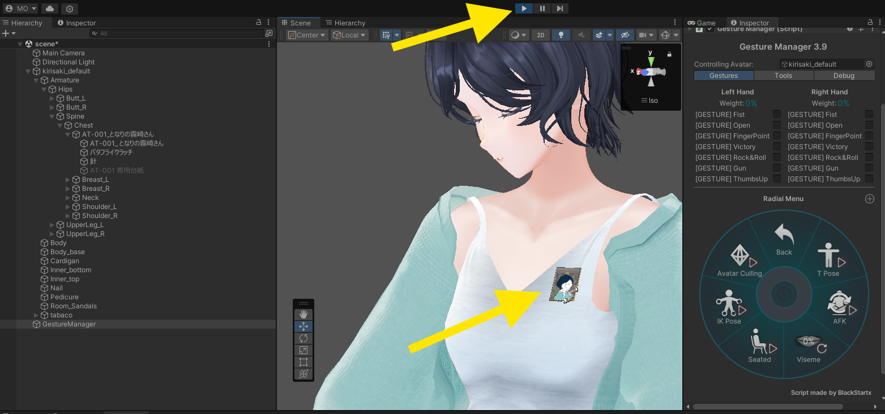
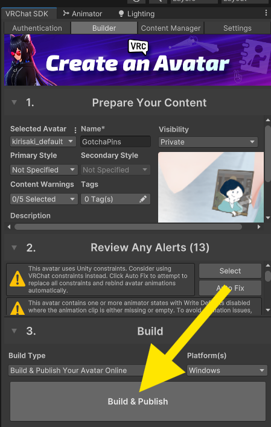

STEP 3 / 5
取り付け手順
インポートからアップロードまで。ひとつずつ進めれば大丈夫です。
- unitypackage をインポート
アバターのプロジェクトを開いた状態で、ダウンロードした.unitypackageをダブルクリック →「Import」。

- ピンバッジをシーンに出す
Assets/GotchaPins/の中のピンバッジ Prefab を、Hierarchy のアバターの近くにドラッグ＆ドロップ。Prefab内の汎用_ピンズ台紙は非表示にしてください。

- 付けたい位置へ動かす
Sceneビューで Move／Rotate／Scale を使い、付けたい場所（胸元・襟・頭など）にだいたいの位置を合わせます。
- ボーンの子にする（いちばん大事）
アバターの骨組み（Armature）から付けたい部位のボーンを探し、ピンバッジをそのボーンの子になるようにドラッグして入れます。
→ どのボーンを選ぶかは ④ ボーン選びの目安 を参照。

- 微調整
ボーンの子に入れた状態で、位置・回転・大きさを最終調整します。 - ちゃんと付いてるか確認
Playモードで体や首を動かし、ピンバッジが体と一緒に動けば成功です。（GestureManager などがあると確認しやすいです）
📖 GestureManagerの導入方法はこちら：2026年最新【最強ツール】 Gesture Managerを導入してunity上でギミック導入を確認しよう(VRChat) - アップロード
いつものアバターアップロード手順でアップロードすれば完了です。
うまく付かない・ずれるときは ⑤ Q&A を確認してください。